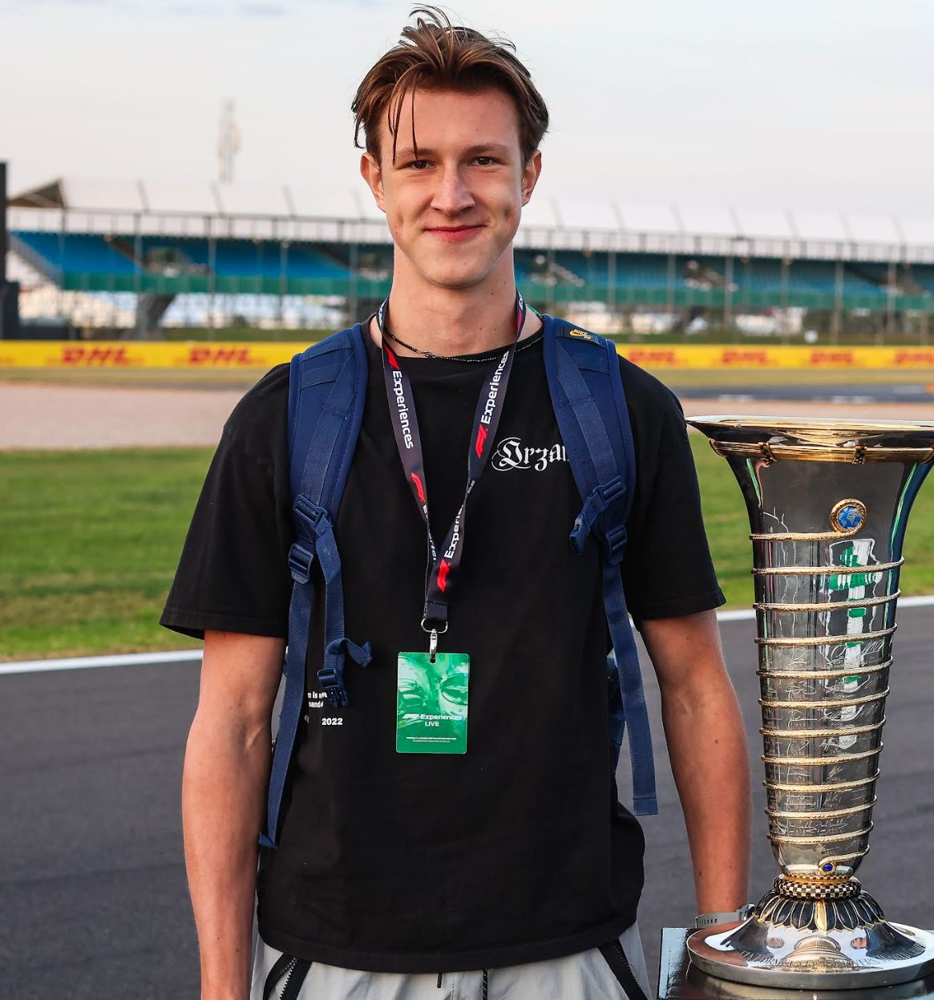

Mechanical Engineering · Villanova University
Luke Gustafson
Senior in Mechanical Engineering. I lead composites manufacturing for the Villanova Formula SAE aero package, interned in manufacturing engineering at Lockheed Martin, and focus my coursework on thermal-fluid systems.
